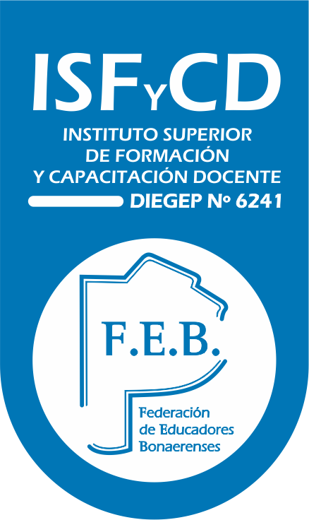

Comisión 1
Fuentes y Servicios de Información · 1.º Año

OPAC Académico · Catálogo de Cátedra · Ciclo Lectivo 2026
1.º Año — Bibliotecología · Instituto Superior de Formación y Capacitación Docente FEB
Equipo docente: Silvia Moriondo · Emiliano Coria
Seleccioná tu comisión para acceder al terminal de consulta individual. Cada enlace lleva directamente a la sala correspondiente y solicita tu DNI para mostrar únicamente tu ficha personal.
Fuentes y Servicios de Información · 1.º Año
Fuentes y Servicios de Información · 1.º Año
Fuentes y Servicios de Información · 1.º Año
Fuentes y Servicios de Información · 1.º Año
Fuentes y Servicios de Información · 1.º Año
Fuentes y Servicios de Información · 1.º Año
Ingresá tu N.º de Documento para localizar y desencriptar tu ficha catalográfica personal en el acta de esta comisión.
Registro no localizado
Ficha catalográfica de calificación final
Calificación numérica definitiva correspondiente al cierre de cursada 2026 en la unidad curricular Fuentes y Servicios de Información.
¡Gracias por todo el esfuerzo y el recorrido compartido en Fuentes y Servicios de Información! Terminar el primer año de Bibliotecología es un gran paso: ahora es tiempo de descansar, disfrutar el receso y recargar energías.
El año que viene nos volveremos a encontrar para seguir construyendo juntos su formación en tres espacios fundamentales de 2.º año:
¡Felices vacaciones y muy merecido descanso!
Silvia Moriondo y Emiliano Coria — Cátedra de Fuentes y Servicios de Información